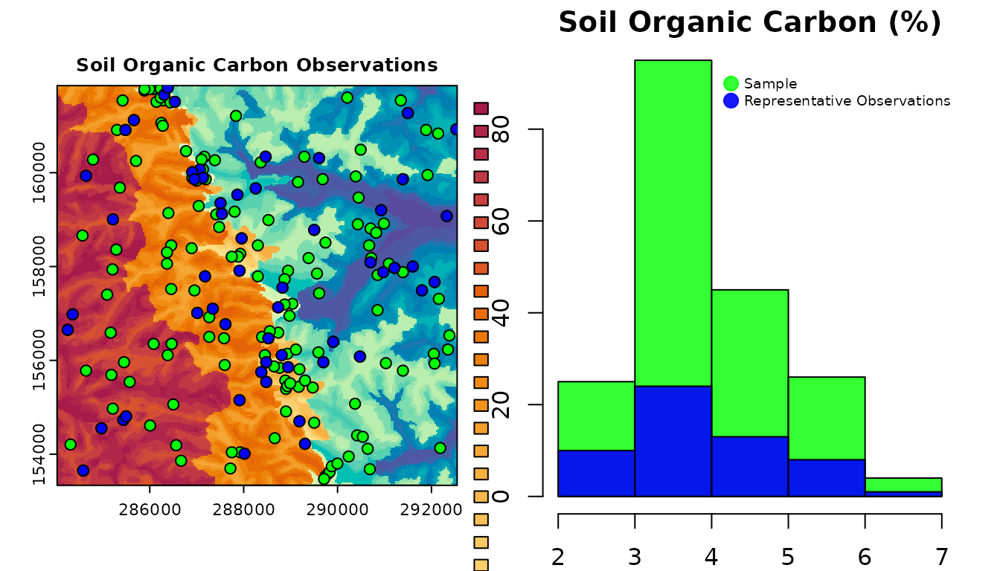

Stratified Non-Probability Sampling
rassta: Raster-based Spatial Stratification Algorithms
Source:vignettes/sampling.Rmd
sampling.RmdGet the data required for this vignette
# Compressed folder with files from rassta’s installation folder
wasoil <- system.file("exdat/wasoil.zip", package = "rassta")
# Directory for temporary files
o <- tempdir()
# Copy compressed folder to directory for temporary files
file.copy(from = wasoil, to = o)
#> [1] TRUE
# Extract files to subfolder
d <- paste(o, "/rassta", sep = "")
unzip(paste(o, "/wasoil.zip", sep = ""), exdir = d)The use of stratification units for sampling allows adequate representations of the feature space, improved modeling performance, and cost-efficient field work. Accordingly, rassta allows the stratified selection of observations from an existing sample and the selection of XY locations to create a new sample. The stratified sampling with rassta can include the landscape similarity layers. Accounting for the landscape similarity will ensure that the observation/location selected for a given stratification unit is the one which best reflects the landscape configuration represented by the unit. The use of landscape similarity layers in the sampling process results in a stratified, non-probability sample.
Selection of representative observations
The selection of observations from an existing sample with rassta results in one observation per stratification unit in a set. This observation is termed the representative response observation. The representative response observation is assumed to best reflect the control that the landscape configuration represented by a stratification unit exerts on response phenomena. Currently, rassta allows to select a representative response observation for each stratification unit in a set based on the following methods:
- mls: selects the observation at the location with the maximum landscape similarity value.
- mrv: selects the observation whose response value is the median of all the values.
- random: selects an observation at random.
The first two methods represent a stratified non-probability sampling, while the third method represents a stratified random sampling. Moreover, the first method is biased towards maximizing the representativeness of landscape configurations because it uses landscape similarity layers. The codes below demonstrate the selection of representative response observations with observation(). The observations will be selected from a sample of n = 195 based on the mls method.
- Creation of multi-layer SpatRaster with landscape similarity to stratification units.
# Load rassta and terra packages
library(rassta)
library(terra)
# Single-layer SpatRaster of stratification units
su <- rast(paste(d, "/su.tif", sep = ""))
# Multi-layer SpatRaster with spatial signatures of classification units
clim.sig <- rast(list.files(d, pattern = "climate_", full.names = TRUE)) # For climatic units
mat.sig <- rast(list.files(d, pattern = "material_", full.names = TRUE)) # For material units
terr.sig <- rast(list.files(d, pattern = "terrain_", full.names = TRUE)) # For terrain units
# Landscape similarity to stratification units
su.ls <- similarity(su.rast = su, sig.rast = c(clim.sig, mat.sig, terr.sig),
su.code = list(climate = c(1, 1),
material = c(2, 2),
terrain = c(3, 3)
)
)- Selection of the representative response observation for each stratification unit. The response variable in this example is soil organic carbon (SOC).
# SpatVector with SOC observations for stratification units
socobs <- vect(paste(d, "/soc.shp", sep = ""))
# Representative SOC observation for each stratification unit
su.obs <- observation(su.rast = su, obs = socobs, col.id = 1, col.resp = 2,
method = "mls", ls.rast = su.ls$landsim
)
# Information about sample and representative SOC observations
socobs
#> class : SpatVector
#> geometry : points
#> dimensions : 195, 2 (geometries, attributes)
#> extent : 284252, 292532, 153471, 161811 (xmin, xmax, ymin, ymax)
#> coord. ref. : NAD83 / Washington South (EPSG:32149)
#> names : ID soc
#> type : <num> <num>
#> values : 1 6.603
#> 2 5.701
#> 3 5.594
su.obs$su_repobs.sp
#> class : SpatVector
#> geometry : points
#> dimensions : 56, 4 (geometries, attributes)
#> extent : 284252, 292532, 153651, 161811 (xmin, xmax, ymin, ymax)
#> coord. ref. : NAD83 / Washington South (EPSG:32149)
#> names : ID soc SU land_sim
#> type : <num> <num> <num> <num>
#> values : 1 6.603 111 80.67
#> 6 5.443 112 85
#> 10 4.609 114 77.33- The spatial and statistical distribution of the sample and representative response observations can be plotted as demonstrated in the code below.
# Set graphics arrangement
par(mfrow = c(1,2))
# Plot stratification units and response observations
plot(su, type = "classes", col = hcl.colors(56, "spectral"), legend = FALSE,
mar = c(3, 2, 3, 1.5), main = paste("Soil Organic Carbon Observations"),
fun = function() c(points(socobs, pch = 21, bg = rgb(0,1,0,1)),
points(su.obs$su_repobs.sp, pch = 21, bg = rgb(0,0,1,1))
)
)
# Set new graphics arrangement
par(mar = c(2, 1.5, 1.5, 1.5))
# Plot histogram of soil organic carbon values from all observations
hist(socobs$soc, 4, col = rgb(0,1,0,0.8), main = "Soil Organic Carbon (%)", xlab = "")
# Plot histogram of soil organic carbon values from representative observations
hist(su.obs$su_repobs.sp$soc, 4, add = T, col = rgb(0,0,1,0.9))
# Add legend
legend("topright", legend = c("Sample", "Representative Observations"),
col = c(rgb(0,1,0,0.8), rgb(0,0,1,0.9)), pch = 20, bty = "n", pt.cex = 2,
cex = 0.6, text.col = "black", horiz = F, inset = c(0, 0.05)
)
Selection of representative sampling locations
For those cases when a sample with observations of a response phenomenon is not available, rassta allows to define XY locations that can be used to establish field sampling campaigns. The selection of representative sampling locations is performed for each stratification unit in a set, and it utilizes the landscape similarity layers to define the XY locations. Currently, rassta allows to select representative sampling locations based on two approaches:
buffer: selects the XY location(s) within spatially contiguous areas with landscape similarity values above a user-defined threshold.
absolute: selects the XY location(s) with the n highest landscape similarity values.
The code below demonstrates the selection of representative sampling locations with the function locations(), based on the buffer method.
# Representative sampling location and its buffer area for each stratification unit
su.samp <- locations(ls.rast = su.ls$landsim, su.rast = su, method = "buffer")
# Information about representative sampling locations and corresponding buffer areas
su.samp$locations
#> class : SpatVector
#> geometry : points
#> dimensions : 56, 4 (geometries, attributes)
#> extent : 284042, 292532, 153351, 161841 (xmin, xmax, ymin, ymax)
#> coord. ref. : NAD83 / Washington South (EPSG:32149)
#> names : SU land_sim x y
#> type : <num> <num> <num> <num>
#> values : 111 92.67 2.845e+05 1.55e+05
#> 112 89.33 2.843e+05 1.572e+05
#> 113 90.67 2.841e+05 1.552e+05
su.samp$buffers
#> class : SpatVector
#> geometry : polygons
#> dimensions : 56, 2 (geometries, attributes)
#> extent : 284027, 292547, 153336, 161856 (xmin, xmax, ymin, ymax)
#> coord. ref. : NAD83 / Washington South (EPSG:32149)
#> names : geometry SU
#> type : <chr> <num>
#> values : MULTIPOLYGON (((284027 156006, 284027 155946, 284~ 116
#> MULTIPOLYGON (((284447 155406, 284447 155376, 284~ 113
#> MULTIPOLYGON (((285167 155106, 285167 155076, 285~ 117The spatial distribution of representative sampling locations and the statistical distribution of landscape similarity can be plotted as demonstrated in the code below.
# Set graphics arrangement
par(mfrow = c(1,2))
# Plot stratification units, representative sampling locations and buffer areas
plot(su, type = "classes", col = hcl.colors(56, "spectral"), legend = FALSE,
mar = c(3, 2, 3, 1.5), main = "Representative Sampling Locations",
fun = function() c(polys(su.samp$buffers, col = rgb(0,1,0,0.5)),
points(su.samp$locations, pch = 21, col = "black",
bg = rgb(0,1,0,1)
)
)
)
# Set new graphics arrangement
par(mar = c(2, 1.5, 1.5, 1.5))
# Plot histogram of landscape similarity values at sampling locations
hist(su.samp$locations$land_sim, 4, main = "Landscape Similarity")Clean files from temporary directory
References
- B.A. Fuentes, M.J. Dorantes, and J.R. Tipton. rassta: Raster-based Spatial Stratification Algorithms. EarthArXiv, 2021. https://doi.org/10.31223/X50S57